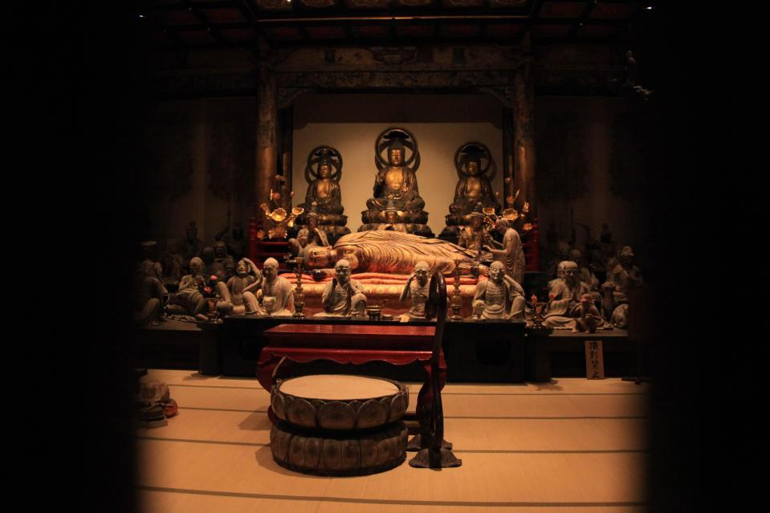

江戸時代を偲ぶ。レトロでおしゃれな昔町「仏生山町」を散策
江戸時代を偲ぶ。レトロでおしゃれな昔町「仏生山町」を散策
高松市街から南約10km、"ことでん" （高松琴平電気鉄道）で15分ほどの場所にある仏生山（ぶっしょうざん）町は、初代高松藩主を弔う「法然寺」の門前町として栄えました。仏生山駅から法然寺へ向かう県道166号線は、歴代高松藩主が墓参りで通ったことから「お成り街道」「殿様街道」と呼ばれ、江戸時代を偲ぶ古い建物が残っています。約200年前に創業した老舗や、リノベ―ションしたすてきなカフェなどにも立ち寄りながら、ぶらりとそぞろ歩きを楽しみましょう。
そして、旅の締めくくりには、日本デザイン振興会が主催するグッドデザイン賞を受賞したスタイリッシュな「仏生山温泉」でのんびり。高松からの日帰り旅行におすすめのレトロでおしゃれな昔町です。
門前町としてにぎわった「お成り街道」。
10月には「仏生山大名行列」が練り歩く
仏生山駅から東へ歩き、県道166号線を南へ。ここから「ちきり神社」までの約1.3kmは、「お成り街道」の名で親しまれています。この通りを歩けば、江戸時代に建てられた商家や町家が点在し、門前町としてにぎわった当時の面影を感じることができるでしょう。
1789年創業の醸造場「神崎屋」で杉の大樽で発酵･熟成させた「吉の酢」を買ったり、重要指定文化財の元呉服店を改装した手作りサンドイッチの店「天満屋サンド」や、築約90年の古民家をリノベーションした「カフェ アジール」などで途中休憩をしたりしながら、江戸時代に思いをはせながら歩きたいですね。毎年10月には、侍やお姫様の衣装に身を包んだ「仏生山大名行列」が華やかに練り歩きます。
高松藩主ゆかりの法然寺へ。明治5年創業の老舗で、たんきり飴づくり体験も

県道166号線の突き当たりにある「ちきり神社」を参拝後、西へ進路を変えて「法然寺」へ。浄土宗開祖の法然が1207年に讃岐に流された際に住んだお寺の遺跡を、高松藩祖の松平頼重が復興して菩提寺としました。そびえる五重塔を仰ぎ見ながら、ゆっくり散策ができます。境内には本格手打ちさぬきうどん店「竜雲」があり、本場の腰の強いうどんを味わうことも。
食後は、緑豊かな仏生山公園の中を歩いて、たんきり飴で有名な明治5年創業の和菓子店「徳栄堂」へ向かいましょう。その始まりは、法然寺の住職が風邪で困っているのを心配し、痰（たん）がよく切れるようにと、水あめの中に大豆とゴマ、ショウガを入れて作ったことといわれています。ここでは飴づくり体験（要予約）も実施しています。
ハイセンスな仏生山温泉で、旅の疲れを癒やそう。かき氷も人気
作りたてのたんきり飴をほおばりながら県道166号線へ戻り、仏生山駅とは反対方向の東へ右折すると間もなく、モダンな建物が見えてきます。観光客にも人気の高い「仏生山温泉」です。とびきり洗練された建物に加えて、療養泉でもある質の高い重曹泉を、贅沢にもかけ流しています。開放的な露天風呂もあり、ゆったり浸かれば街歩きの疲れも吹き飛ぶこと間違いありません。美人の湯としても知られ、湯上りはお肌がしっとりつるつるになるそうです。館内には休憩スペースや食堂もあり、美味しいと評判のふわふわのかき氷で、火照った身体をクールダウンしましょう。
時間に余裕があれば、「仏生山温泉」温泉の近くにある、食堂や商店などとして地元で人気の「四国食べる商店」、のんびり過ごしたい古本＆カフェの「へちま文庫」、生活雑貨やアートを集めた「toytoytoy」などへも、足を運びたいものです。